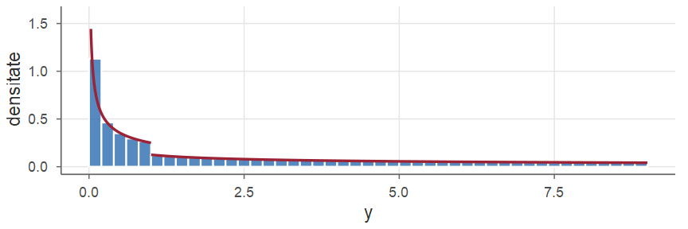
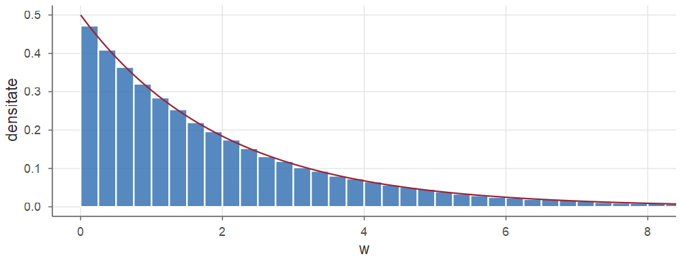
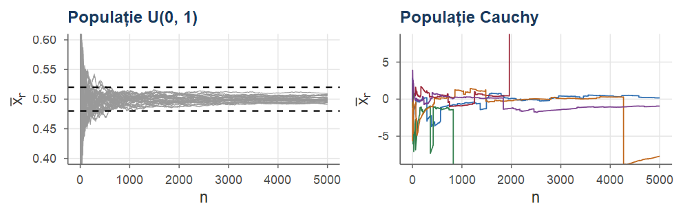
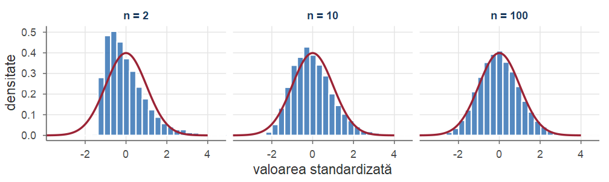

Statistică · Cursul 1
Universitatea din București · Facultatea de Matematică și Informatică · 2026–2027
Statistica matematică este construită în limbajul teoriei probabilităților: un eșantion este un vector aleator, o statistică este o v.a., proprietățile unui estimator sunt proprietăți ale repartiției lui, iar comportamentul „pentru volume mari” se exprimă prin teoreme limită.
Obiective.
Cursul de Statistică (semestrul I, anul al III-lea): două cursuri introductive (acesta și Cursul 2), apoi patru părți: simulare și eșantionare (de la Cursul 3 la Cursul 6), estimare punctuală (de la Cursul 7 la Cursul 11), intervale de încredere (Cursul 12 și Cursul 13) și testarea ipotezelor statistice (Cursul 14, eventual Cursul 15 și Cursul 16). Seminarul și laboratorul (în R) au loc săptămânal; modul de evaluare este precizat în fișa disciplinei.
Experiment aleator: rezultatul nu poate fi prezis cu certitudine, dar mulțimea \(\Omega\) a rezultatelor posibile (spațiul stărilor) este cunoscută: \(\{1,\dots,6\}\) pentru un zar, \([0,1]^2\) pentru un punct ales la întâmplare în pătratul unitate. Un eveniment este o mulțime \(A\subseteq\Omega\) și se realizează dacă rezultatul observat \(\omega\in A\); operațiile logice devin operații cu mulțimi (\(A^c\), \(A\cup B\), \(A\cap B\)); \(A\) și \(B\) sunt incompatibile dacă \(A\cap B=\emptyset\).
O familie \(\F\) de submulțimi ale lui \(\Omega\) este o \(\sigma\)-algebră dacă: (i) \(\Omega\in\F\); (ii) \(A\in\F\Rightarrow A^c\in\F\); (iii) \(A_1,A_2,\ldots\in\F\Rightarrow\bigcup_{n\ge1}A_n\in\F\). Perechea \((\Omega,\F)\) se numește spațiu măsurabil, iar elementele lui \(\F\) se numesc evenimente.
Frecvența relativă \(n_A/n\) a unui eveniment se stabilizează când \(n\) crește; definiția axiomatică (Kolmogorov, 1933) reține doar proprietățile frecvențelor relative, iar stabilizarea lor devine o teoremă.
Fie \((\Omega,\F)\) un spațiu măsurabil. O funcție \(\PP:\F\to[0,1]\) este o probabilitate dacă (i) \(\PP(\Omega)=1\) și (ii) (\(\sigma\)-aditivitatea) pentru orice șir \((A_n)_{n\ge1}\) de evenimente disjuncte două câte două, \(\PP\big(\bigcup_{n\ge1}A_n\big)=\sum_{n\ge1}\PP(A_n)\). Tripletul \((\Omega,\F,\PP)\) se numește câmp de probabilitate.
Modele discrete. \(\Omega=\{\omega_1,\omega_2,\dots\}\) cel mult numărabil, \(\F=\mathcal{P}(\Omega)\), \(p_i\ge0\) cu \(\sum_ip_i=1\): \(\PP(A)=\sum_{i:\,\omega_i\in A}p_i\). Modelul clasic: \(p_i=1/|\Omega|\); repartiția Poisson: \(p_k=e^{-\lambda}\lambda^k/k!\), \(k\in\N\).
Probabilitatea geometrică. \(\Omega=[0,1]^2\), \(\F=\B([0,1]^2)\), \(\PP(A)=\text{aria}(A)\) (existența și \(\sigma\)-aditivitatea ariei: admise (Jacod and Protter 2004, cap. 6; Durrett 2019, sec. 1.1)). „Punctul se află la distanță cel mult \(1\) de origine”: probabilitatea \(\pi/4\).
Fie \((\Omega,\F,\PP)\) un câmp de probabilitate și \(A,B,A_1,A_2,\ldots\in\F\). Atunci:
\(\PP(\emptyset)=0\) și, pentru \(A_1,\dots,A_m\) disjuncte, \(\PP\big(\bigcup_{k=1}^mA_k\big)=\sum_{k=1}^m\PP(A_k)\);
\(\PP(A^c)=1-\PP(A)\);
(monotonie) dacă \(A\subseteq B\), atunci \(\PP(B\setminus A)=\PP(B)-\PP(A)\) și \(\PP(A)\le\PP(B)\);
(formula reuniunii) \(\PP(A\cup B)=\PP(A)+\PP(B)-\PP(A\cap B)\);
(subaditivitate, inegalitatea lui Boole) \(\PP\big(\bigcup_{n\ge1}A_n\big)\le\sum_{n\ge1}\PP(A_n)\) (și pentru reuniuni finite);
(continuitate) dacă \(A_n\nearrow A\) (\(A_n\subseteq A_{n+1}\), \(\bigcup_nA_n=A\)) sau \(A_n\searrow A\) (\(A_n\supseteq A_{n+1}\), \(\bigcap_nA_n=A\)), atunci \(\PP(A_n)\to\PP(A)\).
Un eveniment de probabilitate \(1\) se realizează aproape sigur (a.s.). Demonstrația (reuniuni de evenimente disjuncte și \(\sigma\)-aditivitate): (Resnick 1999, sec. 2.1; Jacod and Protter 2004, cap. 2).
Un zar: dacă aflăm că a apărut un număr par, \(B=\{2,4,6\}\), probabilitatea lui \(6\) devine \(|A\cap B|/|B|=1/3\).
Dacă \(B\in\F\) și \(\PP(B)>0\), probabilitatea condiționată a evenimentului \(A\) de \(B\) este \(\PP(A\mid B)=\dfrac{\PP(A\cap B)}{\PP(B)}\).
Dacă \(\PP(B)>0\), funcția \(A\mapsto\PP(A\mid B)\) este o probabilitate pe \((\Omega,\F)\), cu \(\PP(B\mid B)=1\).
Dacă \(\PP(A_1\cap\dots\cap A_{n-1})>0\), atunci \(\PP(A_1\cap\dots\cap A_n)=\PP(A_1)\,\PP(A_2\mid A_1)\,\PP(A_3\mid A_1\cap A_2)\cdots\PP(A_n\mid A_1\cap\dots\cap A_{n-1})\).
Experimente în etape: \(3\) bile extrase fără întoarcere dintr-o urnă cu \(5\) bile roșii și \(3\) verzi sunt toate roșii cu probabilitatea \(\frac58\cdot\frac47\cdot\frac36=\frac5{28}\).
Sistem complet de evenimente: o familie cel mult numărabilă \(B_1,B_2,\dots\) de evenimente disjuncte două câte două, cu \(\bigcup_iB_i=\Omega\); la fiecare efectuare a experimentului se realizează exact unul dintre ele.
Dacă \((B_i)_i\) este un sistem complet de evenimente cu \(\PP(B_i)>0\), atunci \(\PP(A)=\sum_i\PP(B_i)\,\PP(A\mid B_i)\) pentru orice \(A\in\F\).
În ipotezele Teoremei 7, dacă \(\PP(A)>0\), atunci pentru orice \(j\) \[ \PP(B_j\mid A)=\frac{\PP(B_j)\,\PP(A\mid B_j)}{\sum_i\PP(B_i)\,\PP(A\mid B_i)} . \]
Formula lui Bayes „inversează” condiționarea: din probabilitățile a priori \(\PP(B_j)\) și din \(\PP(A\mid B_j)\) obținem probabilitățile a posteriori \(\PP(B_j\mid A)\). Demonstrații: (Jacod and Protter 2004, cap. 3; Knight 2000, sec. 1.3).
O boală are prevalența \(0.001\). Un test are rata de rezultate fals pozitive \(0.05\) și rata de rezultate fals negative \(0.01\) (Knight 2000, Ex. 1.7). O persoană aleasă la întâmplare are testul pozitiv; care este probabilitatea să fie bolnavă?
Fie \(D\) = „persoana este bolnavă” și \(T\) = „testul este pozitiv”: \(\PP(D)=0.001\), \(\PP(T\mid D^c)=0.05\) și \(\PP(T\mid D)=1-\PP(T^c\mid D)=0.99\) (Propoziția 5). Cu sistemul complet \(\{D,D^c\}\), formula probabilității totale și formula lui Bayes dau \[ \PP(T)=0.001\cdot0.99+0.999\cdot0.05=0.05094,\qquad \PP(D\mid T)=\frac{0.001\cdot0.99}{0.05094}\approx0.0194 . \] Doar circa \(2\%\) dintre persoanele cu test pozitiv sunt bolnave: la \(100\,000\) de persoane, circa \(100\) sunt bolnave, dintre care \(99\) au testul pozitiv, pe când dintre cele \(99\,900\) sănătoase, circa \(4\,995\) au testul pozitiv.
Dacă \(\PP(A\mid B)=\PP(A)\), aflarea faptului că \(B\) s-a realizat nu modifică probabilitatea lui \(A\); înmulțind cu \(\PP(B)\) obținem o relație simetrică, care are sens și pentru \(\PP(B)=0\).
Evenimentele \(A\) și \(B\) sunt independente dacă \(\PP(A\cap B)=\PP(A)\PP(B)\). Evenimentele \(A_1,\dots,A_n\) sunt independente (în ansamblu) dacă \(\PP(A_{i_1}\cap\dots\cap A_{i_k})=\PP(A_{i_1})\cdots\PP(A_{i_k})\) pentru orice \(2\le k\le n\) și \(i_1<\dots<i_k\). Un șir de evenimente este format din evenimente independente dacă orice subfamilie finită este independentă.
Dacă \(A\) și \(B\) sunt independente, atunci sunt independente și perechile \((A,B^c)\), \((A^c,B)\), \((A^c,B^c)\).
O mărime numerică asociată rezultatului (numărul de capete, media unui eșantion) este o funcție \(X:\Omega\to\R\); pentru a vorbi despre \(\PP(X\in B)\), preimaginea \(\{X\in B\}=X^{-1}(B)\) trebuie să fie un eveniment.
O funcție \(X:\Omega\to\R\) este o variabilă aleatoare (v.a.) dacă este măsurabilă în raport cu \(\F\) și \(\B(\R)\), adică \(X^{-1}(B)=\{\omega\in\Omega:X(\omega)\in B\}\in\F\) pentru orice \(B\in\B(\R)\). Mai general, o funcție \(X:\Omega\to E\) cu valori într-un spațiu măsurabil \((E,\mathcal{E})\) este măsurabilă (un element aleator al lui \(E\)) dacă \(X^{-1}(B)\in\F\) pentru orice \(B\in\mathcal{E}\).
Repartiția v.a. \(X\) este \(\PP_X(B)=\PP(X\in B)\), \(B\in\B(\R)\). Scriem \(X\eqd Y\) dacă \(X\) și \(Y\) au aceeași repartiție.
Funcția de repartiție a v.a. \(X\) este \(F_X:\R\to[0,1]\), \(F_X(x)=\PP(X\le x)\).
Fie \(F=F_X\). (a) \(F\) este crescătoare și \(\PP(a<X\le b)=F(b)-F(a)\) pentru \(a<b\). (b) \(\lim_{x\to-\infty}F(x)=0\), \(\lim_{x\to+\infty}F(x)=1\). (c) \(F\) este continuă la dreapta. (d) În orice punct \(x_0\), \(F(x_0-)=\PP(X<x_0)\) și \(\PP(X=x_0)=F(x_0)-F(x_0-)\).
Demonstrația (monotonia și continuitatea probabilității): (Jacod and Protter 2004, cap. 7; Billingsley 1995, sec. 14).
| Repartiție | Funcția de masă \(\PP(X=k)\) | \(\E[X]\) | \(\Var(X)\) | R |
|---|---|---|---|---|
| \(\Bern(p)\) | \(p^k(1-p)^{1-k}\), \(k\in\{0,1\}\) | \(p\) | \(p(1-p)\) | binom |
| \(\Bin(n,p)\) | \(\binom nk p^k(1-p)^{n-k}\), \(0\le k\le n\) | \(np\) | \(np(1-p)\) | binom |
| \(\Geom(p)\) | \((1-p)^{k-1}p\), \(k\ge1\) | \(1/p\) | \((1-p)/p^2\) | geom |
| \(\NBin(r,p)\) | \(\binom{k-1}{r-1}p^r(1-p)^{k-r}\), \(k\ge r\) | \(r/p\) | \(r(1-p)/p^2\) | nbinom |
| \(\Pois(\lambda)\) | \(e^{-\lambda}\lambda^k/k!\), \(k\ge0\) | \(\lambda\) | \(\lambda\) | pois |
| \(\HGeom(N,K,n)\) | \(\binom Kk\binom{N-K}{n-k}\big/\binom Nn\) | \(nK/N\) | \(\frac{nK(N-K)(N-n)}{N^2(N-1)}\) | hyper |
geom și nbinom numără eșecurile dinaintea succesului (al \(r\)-lea): dgeom(k - 1, p) \(=\PP(X=k)\); pentru \(\Bern(p)\), binom cu size = 1; dhyper(k, K, N - K, n).| Repartiție | Densitatea \(f(x)\) | \(\E[X]\) | \(\Var(X)\) | R |
|---|---|---|---|---|
| \(\Unif(a,b)\) | \(1/(b-a)\), \(a<x<b\) | \((a+b)/2\) | \((b-a)^2/12\) | unif |
| \(\Exp(\lambda)\) | \(\lambda e^{-\lambda x}\), \(x>0\) | \(1/\lambda\) | \(1/\lambda^2\) | exp |
| \(\Norm(\mu,\sigma^2)\) | \((2\pi\sigma^2)^{-1/2}e^{-(x-\mu)^2/(2\sigma^2)}\) | \(\mu\) | \(\sigma^2\) | norm |
| \(\GammaD(\alpha,\lambda)\) | \(\lambda^\alpha x^{\alpha-1}e^{-\lambda x}/\Gamma(\alpha)\), \(x>0\) | \(\alpha/\lambda\) | \(\alpha/\lambda^2\) | gamma |
| \(\BetaD(a,b)\) | \(x^{a-1}(1-x)^{b-1}/B(a,b)\), \(0<x<1\) | \(a/(a+b)\) | \(ab/\big((a+b)^2(a+b+1)\big)\) | beta |
| \(\Cauchy(0,1)\) | \(1/\big(\pi(1+x^2)\big)\) | – | – | cauchy |
rate \(=\lambda\) pentru exp și gamma (plus shape \(=\alpha\)), sd \(=\sigma\) pentru norm. \(\Exp(\lambda)\) nu are memorie: \(\PP(X>s+t\mid X>s)=\PP(X>t)\).d (masă sau densitate), p (funcția de repartiție), q (cuantila: cel mai mic \(x\) cu \(F(x)\ge p\)) și r (generare). Pentru \(X\sim\Bin(10,0.3)\): dbinom(3, 10, 0.3) \(=\PP(X=3)\approx\) 0.2668, pbinom(3, 10, 0.3) \(=\PP(X\le3)\approx\) 0.6496, qbinom(0.5, 10, 0.3) \(=\) 3.Dacă \(g\) este boreliană, \(Y=g(X)\) este o v.a. și \(\PP(Y\in B)=\PP\big(X\in g^{-1}(B)\big)\) pentru orice \(B\in\B(\R)\).
Fie \(Y\) o v.a. cu funcția de repartiție \(F\). Presupunem că \(F\) este continuă pe \(\R\) și că există puncte \(a_1<a_2<\dots<a_r\) astfel încât \(F\) este derivabilă, cu derivata continuă, pe fiecare dintre intervalele deschise \((-\infty,a_1)\), \((a_1,a_2)\), \(\dots\), \((a_r,\infty)\). Atunci \(Y\) este o v.a. continuă, iar funcția \(f\) definită prin \(f(y)=F'(y)\) pentru \(y\notin\{a_1,\dots,a_r\}\) și \(f(a_i)=0\) este o densitate a lui \(Y\).
Demonstrația (formula Leibniz–Newton pe fiecare interval și continuitatea lui \(F\) în \(a_i\)): (Billingsley 1995, sec. 31).
Fie \(X\) o v.a. cu densitatea \(f_X\), nulă în afara unui interval deschis \(I\), și \(g:I\to\R\) strict monotonă și derivabilă, cu \(g'\ne0\) pe \(I\). Atunci \(Y=g(X)\) are densitatea \[ f_Y(y)=f_X\big(g^{-1}(y)\big)\,\Big|\frac{\dd}{\dd y}g^{-1}(y)\Big|,\quad y\in g(I),\qquad\text{și}\quad f_Y(y)=0\ \text{ pentru } y\notin g(I). \]
Demonstrație (pașii principali). Fie \(I=(\alpha,\beta)\). \(J=g(I)=(c,d)\) este un interval deschis, iar \(h=g^{-1}:J\to I\) este derivabilă, cu \(h'=1/g'(h)\) de semn constant; din \(\PP(X\in I)=1\), \(F_Y=0\) pe \((-\infty,c]\) și \(F_Y=1\) pe \([d,\infty)\). Fie \(y\in J\). Dacă \(g\) este crescătoare, \(g(x)\le y\iff x\le h(y)\), iar schimbarea de variabilă \(x=h(t)\) dă \[ F_Y(y)=\int_{\alpha}^{h(y)}f_X(x)\dd x=\int_c^yf_X\big(h(t)\big)\,h'(t)\dd t ; \] dacă \(g\) este descrescătoare, \(g(x)\le y\iff x\ge h(y)\) și \(F_Y(y)=\int_{h(y)}^{\beta}f_X(x)\dd x=\int_c^yf_X(h(t))\big(-h'(t)\big)\dd t\). În ambele cazuri, \(F_Y(y)=\int_{-\infty}^yf_X(h(t))\,|h'(t)|\,\Ind_J(t)\dd t\) pentru orice \(y\in\R\). Detalii: în notă.
Dacă \(X\) are densitatea \(f_X\) și \(b\ne0\), atunci \(Y=a+bX\) are densitatea \(f_Y(y)=\frac1{|b|}f_X\big(\frac{y-a}{b}\big)\).
Dacă \(X\sim\Norm(\mu,\sigma^2)\) și \(b\ne0\), atunci \(a+bX\sim\Norm(a+b\mu,\,b^2\sigma^2)\). În particular, \(Z=(X-\mu)/\sigma\sim\Norm(0,1)\) și \(F_X(x)=\Phi\big((x-\mu)/\sigma\big)\), unde \(\Phi\) este funcția de repartiție a lui \(\Norm(0,1)\), cu densitatea \(\phi(z)=\frac1{\sqrt{2\pi}}e^{-z^2/2}\).
Demonstrație (idee). (a) Teorema 17 cu \(I=\R\) și \(g(x)=a+bx\): \(g^{-1}(y)=\frac{y-a}{b}\), cu derivata \(\frac1b\). (b) Din (a), cu densitatea normală și \(\frac{y-a}{b}-\mu=\frac{y-(a+b\mu)}{b}\); pentru \(a=-\mu/\sigma\), \(b=1/\sigma\) obținem \(Z\), iar \(X\le x\iff Z\le\frac{x-\mu}{\sigma}\).
Fie \(X\) o v.a. cu densitatea \(f_X\) și \(I_1,\dots,I_m\) intervale deschise, disjuncte două câte două, cu \(\PP(X\in I_1\cup\dots\cup I_m)=1\). Fie \(g:I_1\cup\dots\cup I_m\to\R\) o funcție a cărei restricție la fiecare interval \(I_k\) este strict monotonă și derivabilă, cu \(g'\ne0\) pe \(I_k\). Notăm \(J_k=g(I_k)\) și \(h_k:J_k\to I_k\) inversa restricției lui \(g\) la \(I_k\). Atunci \(Y=g(X)\) are densitatea \[ f_Y(y)=\sum_{k=1}^mf_X\big(h_k(y)\big)\,\big|h_k'(y)\big|\,\Ind_{J_k}(y)=\sum_{x:\ g(x)=y}\frac{f_X(x)}{|g'(x)|},\qquad y\in\R, \] a doua sumă fiind luată după toate soluțiile \(x\in I_1\cup\dots\cup I_m\) ale ecuației \(g(x)=y\) (cel mult una în fiecare interval \(I_k\)); numărul termenilor nenuli depinde de \(y\). Ambele formule rămân adevărate pentru o familie numărabilă de intervale \((I_k)_{k\ge1}\) cu aceleași proprietăți, sumele devenind serii.
Idee. Fiecare interval \(I_k\) (ramură a lui \(g\)) contribuie cu un termen ca în Teorema 17: \(F_Y(y)=\sum_k\PP\big(X\in I_k,\ g(X)\le y\big)\). Demonstrația: (Jacod and Protter 2004, cap. 11; Casella and Berger 2002, sec. 2.1).
Pentru \(g(x)=x^2\): ramurile \(I_1=(-\infty,0)\) și \(I_2=(0,\infty)\) (punctul \(0\), în care \(g'\) se anulează, este eliminat, iar \(\PP(X=0)=0\)), \(J_1=J_2=(0,\infty)\), \(h_1(y)=-\sqrt y\), \(h_2(y)=\sqrt y\), \(|h_1'(y)|=|h_2'(y)|=\frac1{2\sqrt y}\).
Dacă \(X\) are densitatea \(f_X\), atunci \(Y=X^2\) are \(F_Y(y)=F_X(\sqrt y)-F_X(-\sqrt y)\) și densitatea \(f_Y(y)=\dfrac{f_X(\sqrt y)+f_X(-\sqrt y)}{2\sqrt y}\) pentru \(y>0\) (\(f_Y=0\) pe \((-\infty,0]\)).
Fie \(Z\sim\Norm(0,1)\) și \(Y=Z^2\). Cu \(\phi(\pm\sqrt y)=\frac{1}{\sqrt{2\pi}}e^{-y/2}\), Propoziția 20 dă \(f_Y(y)=\frac{2}{2\sqrt y}\cdot\frac{e^{-y/2}}{\sqrt{2\pi}}=\frac{1}{\sqrt{2\pi}}\,y^{-1/2}e^{-y/2}\), \(y>0\). Aceasta este densitatea \(\GammaD(\frac12,\frac12)\), a cărei constantă este \(\frac{(1/2)^{1/2}}{\Gamma(1/2)}=\frac1{\sqrt{2\pi}}\) (deoarece \(\Gamma(1/2)=\sqrt\pi\)): \(Z^2\sim\GammaD\big(\frac12,\frac12\big)\), repartiția \(\chi^2\) cu un grad de libertate (Cursul 5).
Fie \(X\sim\Unif(-1,3)\), cu \(f_X=\frac14\) pe \((-1,3)\), și \(Y=X^2\). Pe \(I_1=(-1,0)\): \(J_1=(0,1)\), \(h_1(y)=-\sqrt y\); pe \(I_2=(0,3)\): \(J_2=(0,9)\), \(h_2(y)=\sqrt y\); \(|h_k'(y)|=\frac{1}{2\sqrt y}\). Imaginile sunt diferite: \(y\in(0,1)\) are două preimagini, \(\pm\sqrt y\), iar \(y\in(1,9)\) una singură, \(\sqrt y\) (deoarece \(-\sqrt y<-1\)). Deci \[ f_Y(y)=\frac14\cdot\frac{1}{2\sqrt y}\,\Ind_{(0,1)}(y)+\frac14\cdot\frac{1}{2\sqrt y}\,\Ind_{(0,9)}(y)=\begin{cases}\frac{1}{4\sqrt y},&0<y<1,\\[3pt] \frac{1}{8\sqrt y},&1<y<9,\end{cases}\qquad f_Y(y)=0\ \text{în rest.} \]

Fie \(X\) o v.a. cu densitatea \(f_X\) și \(c\in\R\) cu \(0<F_X(c)<1\). Observăm \(X\) numai până la pragul \(c\): \(Y=\min(X,c)\) (un experiment de fiabilitate oprit la momentul \(c\)). Funcția \(g(x)=\min(x,c)\) este constantă pe \([c,\infty)\), unde \(g'=0\): Teorema 19 nu se aplică. Metoda funcției de repartiție funcționează însă pentru orice \(g\):
De exemplu, pentru \(X\sim\Exp(1)\) și \(c=2\), \(\PP(Y=2)=e^{-2}\approx0.1353\). În general, dacă \(g\) este constantă pe o mulțime căreia \(X\) îi dă probabilitate pozitivă, atunci \(g(X)\) are un atom și nu are densitate.
Dacă \(X\) este discretă și \(\sum_i|x_i|p_i<\infty\), media lui \(X\) este \(\E[X]=\sum_ix_ip_i\); dacă \(X\) este continuă și \(\int_{\R}|x|f_X(x)\dd x<\infty\), \(\E[X]=\int_{\R}xf_X(x)\dd x\). Altfel spunem că \(X\) nu are medie; pentru \(X\ge0\) scriem atunci \(\E[X]=+\infty\). În general, media este integrala Lebesgue \(\int_\Omega X\dd\PP\).
Construcția integralei \(\int_\Omega X\dd\PP\) este admisă (Billingsley 1995, sec. 21; Durrett 2019, secs. 1.4–1.6).
Pentru \(g:\R\to\R\) boreliană, \(\E[g(X)]=\sum_ig(x_i)p_i\) dacă \(X\) este discretă și \(\E[g(X)]=\int_{\R}g(x)f_X(x)\dd x\) dacă \(X\) este continuă, cu condiția ca seria, respectiv integrala, să conveargă absolut.
Fie \(X\), \(Y\) v.a. cu medie și \(a,b\in\R\).
\(\E[a]=a\), \(\E[aX+b]=a\E[X]+b\) și \(\E[\Ind_A]=\PP(A)\).
(liniaritate) \(\E[X+Y]=\E[X]+\E[Y]\).
(monotonie) Dacă \(X\ge0\), atunci \(\E[X]\ge0\); dacă \(X\le Y\), atunci \(\E[X]\le\E[Y]\); \(|\E[X]|\le\E|X|\).
(convergența dominată) Dacă \(X_n\to X\) a.s. și \(|X_n|\le W\) cu \(\E[W]<\infty\), atunci \(\E[X_n]\to\E[X]\).
Deci \(\E\big[\sum_ia_iX_i\big]=\sum_ia_i\E[X_i]\). Demonstrații: (Jacod and Protter 2004, cap. 9 și 11; Billingsley 1995, sec. 16 și 21).
Dacă \(\E|X|^k<\infty\), \(\E[X^k]\) este momentul de ordin \(k\) și \(\E[(X-\E X)^k]\) momentul centrat de ordin \(k\) al lui \(X\). Dacă \(\E[X^2]<\infty\), varianța lui \(X\) este \(\Var(X)=\E\big[(X-\E X)^2\big]\), iar \(\sigma_X=\sqrt{\Var(X)}\) este abaterea standard.
Fie \(\E[X^2]<\infty\), \(\mu=\E[X]\) și \(a,b,c\in\R\). (a) \(\Var(X)=\E[X^2]-\mu^2\). (b) \(\Var(aX+b)=a^2\Var(X)\). (c) \(\E[(X-c)^2]=\Var(X)+(\mu-c)^2\); deci media este constanta cea mai apropiată de \(X\) în medie pătratică.
Demonstrație (liniaritatea mediei). (a) \((X-\mu)^2=X^2-2\mu X+\mu^2\), deci \(\Var(X)=\E[X^2]-2\mu\,\E[X]+\mu^2\). (b) \(aX+b-\E[aX+b]=a(X-\mu)\), deci \(\Var(aX+b)=\E\big[a^2(X-\mu)^2\big]\). (c) \(X-c=(X-\mu)+(\mu-c)\) și \(\E[X-\mu]=0\), deci \(\E[(X-c)^2]=\Var(X)+2(\mu-c)\,\E[X-\mu]+(\mu-c)^2=\Var(X)+(\mu-c)^2\).
Din (b), variabila standardizată \((X-\mu)/\sigma_X\) are media \(0\) și varianța \(1\); relația (c) este prototipul descompunerii „eroare pătratică medie = varianță + deplasare\(^2\)” (Cursul 7).
Bernoulli și binomială. Pentru \(X\sim\Bern(p)\), \(X^2=X\), deci \(\E[X]=\E[X^2]=p\) și \(\Var(X)=p(1-p)\). Pentru \(X\sim\Bin(n,p)\), din \(k\binom nk=n\binom{n-1}{k-1}\) și din binomul lui Newton (cu \(q=1-p\)), \[ \E[X]=\sum_{k=1}^nk\binom nkp^kq^{n-k}=np\sum_{k=1}^n\binom{n-1}{k-1}p^{k-1}q^{n-k}=np(p+q)^{n-1}=np ; \] la fel, \(\E[X(X-1)]=n(n-1)p^2\), deci \(\Var(X)=n(n-1)p^2+np-n^2p^2=np(1-p)\).
Poisson. \(\E[X]=\lambda e^{-\lambda}\sum_{k\ge1}\frac{\lambda^{k-1}}{(k-1)!}=\lambda\) și \(\E[X(X-1)]=\lambda^2e^{-\lambda}\sum_{k\ge2}\frac{\lambda^{k-2}}{(k-2)!}=\lambda^2\), deci \(\E[X^2]=\lambda^2+\lambda\) și \(\Var(X)=\lambda\).
Gamma și exponențială. Pentru \(X\sim\GammaD(\alpha,\lambda)\), cu \(y=\lambda x\): \(\E[X^k]=\frac{\Gamma(\alpha+k)}{\Gamma(\alpha)\,\lambda^k}\), deci \(\E[X]=\frac\alpha\lambda\), \(\E[X^2]=\frac{\alpha(\alpha+1)}{\lambda^2}\) și \(\Var(X)=\frac{\alpha}{\lambda^2}\); pentru \(\Exp(\lambda)=\GammaD(1,\lambda)\), \(\E[X^k]=k!/\lambda^k\).
Normală. Pentru \(Z\sim\Norm(0,1)\): \(z\phi(z)\) este impară și integrabilă, deci \(\E[Z]=0\); prin părți (cu \(\phi'(z)=-z\phi(z)\)), \(\E[Z^2]=\big[-z\phi(z)\big]_{-\infty}^{\infty}+\int_{\R}\phi(z)\dd z=1\). Pentru \(X=\mu+\sigma Z\sim\Norm(\mu,\sigma^2)\): \(\E[X]=\mu\), \(\Var(X)=\sigma^2\).
(Markov) Dacă \(Y\ge0\) și \(a>0\), atunci \(\PP(Y\ge a)\le\dfrac{\E[Y]}{a}\); în particular, pentru \(p>0\), \(\PP(|X|\ge a)\le\dfrac{\E|X|^p}{a^p}\).
(Cebîșev) Dacă \(\E[X^2]<\infty\) și \(\varepsilon>0\), atunci \(\PP\big(|X-\E X|\ge\varepsilon\big)\le\dfrac{\Var(X)}{\varepsilon^2}\).
Demonstrație. (a) Punctual, \(Y\ge a\Ind_{\{Y\ge a\}}\) (aici se folosește \(Y\ge0\)); din monotonia și liniaritatea mediei, \(\E[Y]\ge a\,\E[\Ind_{\{Y\ge a\}}]=a\,\PP(Y\ge a)\). A doua formă: \(\{|X|\ge a\}=\{|X|^p\ge a^p\}\) și aplicăm prima formă variabilei \(|X|^p\ge0\) și numărului \(a^p>0\). (b) A doua formă din (a), cu \(p=2\) și \(a=\varepsilon\), aplicată variabilei \(X-\E X\).
Consecințe. (1) O v.a. \(Y\ge0\) cu \(\E[Y]=0\) este nulă a.s.: \(\PP(Y\ge\frac1k)\le k\,\E[Y]=0\) pentru orice \(k\ge1\), iar \(\{Y\ge\frac1k\}\nearrow\{Y>0\}\) (continuitatea probabilității). (2) \(\Var(X)=0\) dacă și numai dacă \(X\) este constantă a.s. (aplicăm (1) variabilei \((X-\E X)^2\)).
Dacă \(\E[X^2],\E[Y^2]<\infty\), atunci \(XY\) are medie și \(\big(\E[XY]\big)^2\le\E[X^2]\,\E[Y^2]\), cu egalitate dacă și numai dacă \(Y=0\) a.s. sau \(X=t_0Y\) a.s. pentru un \(t_0\in\R\).
Idee: trinomul \(t\mapsto\E[(X-tY)^2]=\E[X^2]-2t\,\E[XY]+t^2\,\E[Y^2]\) este nenegativ, deci are discriminantul nepozitiv. Demonstrația: (Jacod and Protter 2004, cap. 9; Casella and Berger 2002, sec. 4.7).
\(\varphi:I\to\R\) (\(I\) interval) este convexă dacă \(\varphi\big(\lambda x+(1-\lambda)y\big)\le\lambda\varphi(x)+(1-\lambda)\varphi(y)\) pentru \(x,y\in I\), \(\lambda\in[0,1]\) (strict convexă: inegalitate strictă pentru \(x\ne y\), \(\lambda\in(0,1)\)); \(\varphi''\ge0\) (respectiv \(\varphi''>0\)) implică convexitatea (strictă).
Fie \(X\) o v.a. cu medie, cu valori în intervalul \(I\), și \(\varphi:I\to\R\) convexă, cu \(\E|\varphi(X)|<\infty\). Atunci \(\varphi\big(\E[X]\big)\le\E\big[\varphi(X)\big]\). Dacă \(\varphi\) este strict convexă, egalitatea are loc dacă și numai dacă \(X\) este constantă a.s.
Idee: graficul unei funcții convexe se află deasupra unei drepte „de sprijin” prin \((m,\varphi(m))\), \(m=\E[X]\); scriem inegalitatea în \(X(\omega)\) și luăm media. Demonstrația: (Durrett 2019, sec. 1.6; Casella and Berger 2002, sec. 4.7).
\((\E X)^2\le\E[X^2]\) și \(|\E X|\le\E|X|\).
Dacă \(X>0\), atunci \(\E[1/X]\ge1/\E[X]\) și \(\E[\ln X]\le\ln\E[X]\) (când mediile există), cu egalitate numai pentru \(X\) constantă.
(Lyapunov) Pentru \(0<p\le q\), \(\big(\E|Y|^p\big)^{1/p}\le\big(\E|Y|^q\big)^{1/q}\); în particular, \(\E|Y|^q<\infty\Rightarrow\E|Y|^p<\infty\).
Demonstrație. Inegalitatea lui Jensen pentru funcțiile convexe \(x^2\) și \(|x|\), pentru funcțiile strict convexe \(1/x\) și \(-\ln x\) pe \((0,\infty)\) și, la (c), pentru \(w\mapsto w^{q/p}\) și variabila \(W=|Y|^p\), care are medie dacă \(\E|Y|^q<\infty\) (deoarece \(|y|^p\le1+|y|^q\)).
Din (c): existența momentului de ordin \(q\) implică existența momentelor de ordin mai mic; inegalitatea lui Lyapunov va da prima implicație din Teorema 56(b) (convergența în \(L^q\) implică pe cea în \(L^p\), pentru \(p\le q\)).
Funcția generatoare de momente (f.g.m.) a v.a. \(X\) este \(M_X:\R\to[0,\infty]\), \(M_X(t)=\E\big[e^{tX}\big]\), \(t\in\R\). Spunem că \(X\) admite f.g.m. dacă există \(h>0\) astfel încât \(M_X(t)<\infty\) pentru orice \(t\in(-h,h)\).
Pentru orice v.a. \(X\) și \(a,b\in\R\), \(M_{a+bX}(t)=e^{at}M_X(bt)\), \(t\in\R\).
Demonstrație. \(e^{t(a+bX)}=e^{at}e^{(bt)X}\), iar \(e^{at}\) este o constantă; din liniaritatea mediei (valabilă și pentru v.a. nenegative cu medie infinită), \(M_{a+bX}(t)=e^{at}\E\big[e^{(bt)X}\big]=e^{at}M_X(bt)\).
Fie \(q=1-p\). Din binomul lui Newton, seria exponențialei și seria geometrică (de rație \(qe^t<1\), adică \(t<-\ln q\)): \[ \begin{aligned} M_{\Bin(n,p)}(t)&=\sum_{k=0}^ne^{tk}\binom nkp^kq^{n-k}=\sum_{k=0}^n\binom nk(pe^t)^kq^{n-k}=(q+pe^t)^n,&&t\in\R,\\ M_{\Pois(\lambda)}(t)&=\sum_{k\ge0}e^{tk}e^{-\lambda}\frac{\lambda^k}{k!}=e^{-\lambda}\sum_{k\ge0}\frac{(\lambda e^t)^k}{k!}=e^{\lambda(e^t-1)},&&t\in\R,\\ M_{\Geom(p)}(t)&=\sum_{k\ge1}e^{tk}q^{k-1}p=pe^t\sum_{k\ge1}(qe^t)^{k-1}=\frac{pe^t}{1-qe^t},&&t<-\ln q . \end{aligned} \] Pentru \(X\sim\GammaD(\alpha,\lambda)\) și \(t<\lambda\), cu \(y=(\lambda-t)x\): \(M(t)=\frac{\lambda^\alpha}{\Gamma(\alpha)}\int_0^\infty x^{\alpha-1}e^{-(\lambda-t)x}\dd x=\frac{\lambda^\alpha}{(\lambda-t)^\alpha}\cdot\frac{1}{\Gamma(\alpha)}\int_0^\infty y^{\alpha-1}e^{-y}\dd y=\big(\frac{\lambda}{\lambda-t}\big)^{\alpha}\), iar \(M(t)=\infty\) pentru \(t\ge\lambda\). Cazuri particulare: \(M(t)=q+pe^t\) pentru \(\Bern(p)\); \(M(t)=\lambda/(\lambda-t)\), \(t<\lambda\), pentru \(\Exp(\lambda)=\GammaD(1,\lambda)\). Pentru \(\Unif(a,b)\): \(M(t)=\frac{e^{tb}-e^{ta}}{t(b-a)}\), \(t\ne0\).
Fie \(Z\sim\Norm(0,1)\). Completând pătratul, \(tx-x^2/2=t^2/2-(x-t)^2/2\), deci \(M_Z(t)=e^{t^2/2}\int_{\R}\phi(x-t)\dd x=e^{t^2/2}\), \(t\in\R\). Dacă \(X\sim\Norm(\mu,\sigma^2)\), atunci \(X\eqd\mu+\sigma Z\) și, din Lema 31, \(M_X(t)=e^{\mu t}M_Z(\sigma t)=e^{\mu t+\sigma^2t^2/2}\), \(t\in\R\).
| Repartiție | \(M_X(t)\) | domeniu | \(\E[X]\) | \(\Var(X)\) |
|---|---|---|---|---|
| \(\Bern(p)\) | \(1-p+pe^{t}\) | \(t\in\R\) | \(p\) | \(p(1-p)\) |
| \(\Bin(n,p)\) | \((1-p+pe^{t})^n\) | \(t\in\R\) | \(np\) | \(np(1-p)\) |
| \(\Geom(p)\) | \(pe^{t}/\big(1-(1-p)e^{t}\big)\) | \(t<-\ln(1-p)\) | \(1/p\) | \((1-p)/p^2\) |
| \(\Pois(\lambda)\) | \(e^{\lambda(e^{t}-1)}\) | \(t\in\R\) | \(\lambda\) | \(\lambda\) |
| \(\Unif(a,b)\) | \(\big(e^{tb}-e^{ta}\big)/\big(t(b-a)\big)\), \(M(0)=1\) | \(t\in\R\) | \((a+b)/2\) | \((b-a)^2/12\) |
| \(\Exp(\lambda)\) | \(\lambda/(\lambda-t)\) | \(t<\lambda\) | \(1/\lambda\) | \(1/\lambda^2\) |
| \(\GammaD(\alpha,\lambda)\) | \(\big(\lambda/(\lambda-t)\big)^{\alpha}\) | \(t<\lambda\) | \(\alpha/\lambda\) | \(\alpha/\lambda^2\) |
| \(\Norm(\mu,\sigma^2)\) | \(e^{\mu t+\sigma^2t^2/2}\) | \(t\in\R\) | \(\mu\) | \(\sigma^2\) |
Dacă \(M_X(t)<\infty\) pentru \(t\in(-h,h)\), \(h>0\), atunci \(\E|X|^k<\infty\) pentru orice \(k\in\N\), \(M_X\) este indefinit derivabilă pe \((-h,h)\), cu \(M_X^{(k)}(t)=\E\big[X^ke^{tX}\big]\), și \(\ \E\big[X^k\big]=M_X^{(k)}(0)\), \(\ M_X(t)=\sum_{k\ge0}\frac{\E[X^k]}{k!}\,t^k\) pentru \(|t|<h\).
Demonstrația (derivare sub semnul mediei, justificată prin teorema convergenței dominate): (Billingsley 1995, sec. 21).
Fie \(X\) și \(Y\) două v.a. care admit f.g.m. Dacă există \(h>0\) astfel încât \(M_X(t)=M_Y(t)\) pentru orice \(t\in(-h,h)\), atunci \(X\) și \(Y\) au aceeași repartiție: \(F_X=F_Y\).
Demonstrația (proprietățile funcțiilor analitice) depășește cadrul cursului; o admitem (Billingsley 1995, sec. 30; Casella and Berger 2002, sec. 2.3).
Recunoaștem o repartiție după f.g.m.: \(M_X(t)=(0.3+0.7e^t)^5\Rightarrow X\sim\Bin(5,0.7)\); \(M_X(t)=e^{2t+8t^2}\) pentru orice \(t\) \(\Rightarrow X\sim\Norm(2,16)\).
Geometrică. Derivând de două ori \(M(t)=pe^t(1-qe^t)^{-1}\), \(t<-\ln q\), \[ \begin{aligned} M'(t)&=\frac{pe^t(1-qe^t)+pe^t\,qe^t}{(1-qe^t)^2}=\frac{pe^t}{(1-qe^t)^2},\\ M''(t)&=\frac{pe^t(1-qe^t)+2pe^t\,qe^t}{(1-qe^t)^3}=\frac{pe^t(1+qe^t)}{(1-qe^t)^3}. \end{aligned} \] În \(t=0\), cu \(1-q=p\), Teorema 32 dă \(\E[X]=M'(0)=\frac1p\) și \(\E[X^2]=M''(0)=\frac{1+q}{p^2}\), deci \(\Var(X)=\frac{1+q}{p^2}-\frac1{p^2}=\frac{1-p}{p^2}\).
Normală. Comparând seria \(M_Z(t)=e^{t^2/2}=\sum_{j\ge0}\frac{t^{2j}}{2^jj!}\) cu seria din Teorema 32 (coeficienții unei serii de puteri sunt unici), obținem \(\E[Z^{2j+1}]=0\) și \[ \E[Z^{2j}]=\frac{(2j)!}{2^jj!}=1\cdot3\cdot5\cdots(2j-1);\qquad \E[Z^2]=1,\ \ \E[Z^4]=3,\ \ \E[Z^6]=15 . \]
O funcție \(\bX=(X_1,\dots,X_p):\Omega\to\R^p\) se numește vector aleator dacă este măsurabilă în raport cu \(\F\) și \(\B(\R^p)\), adică \(\bX^{-1}(B)\in\F\) pentru orice \(B\in\B(\R^p)\). Repartiția lui \(\bX\) este \(\PP_{\bX}(B)=\PP(\bX\in B)\), \(B\in\B(\R^p)\), iar funcția de repartiție comună este \(F_{\bX}(x_1,\dots,x_p)=\PP(X_1\le x_1,\dots,X_p\le x_p)\).
(a) \(\bX\) este discret dacă ia un număr cel mult numărabil de valori; funcția de masă comună este \(p_{\bX}(\bx)=\PP(\bX=\bx)\) și \(\PP(\bX\in B)=\sum_{\bx\in B}p_{\bX}(\bx)\). (b) \(\bX\) este continuu dacă există \(f_{\bX}:\R^p\to[0,\infty)\) (densitatea comună) cu \[ F_{\bX}(x_1,\dots,x_p)=\int_{-\infty}^{x_1}\!\!\cdots\int_{-\infty}^{x_p}f_{\bX}(t_1,\dots,t_p)\dd t_p\cdots\dd t_1\qquad\text{pentru orice }(x_1,\dots,x_p). \] Atunci \(\PP(\bX\in B)=\int_Bf_{\bX}(\bx)\dd\bx\) pentru \(B\) borelian (admis), iar \(\frac{\partial^pF_{\bX}}{\partial x_1\cdots\partial x_p}=f_{\bX}\) în punctele de continuitate ale lui \(f_{\bX}\).
Fie \((X,Y)\) un vector aleator. Atunci \(F_X(x)=\lim_{y\to\infty}F_{(X,Y)}(x,y)\). Dacă \((X,Y)\) este discret, \(p_X(x)=\sum_yp_{(X,Y)}(x,y)\); dacă \((X,Y)\) este continuu, \(X\) este continuă, cu densitatea \(f_X(x)=\int_{\R}f_{(X,Y)}(x,y)\dd y\). Analog pentru \(Y\) și pentru vectori cu mai multe componente.
În exemplu: (a) \(X\sim\Unif(0,1)\) și \(Y\sim\Unif(0,2)\); (b) \(f_X(x)=\int_0^x2\dd y=2x\) și \(f_Y(y)=\int_y^12\dd x=2(1-y)\) pe \((0,1)\); (c) \(N_1\sim\Bin(n,p_1)\). Demonstrația (Fubini, în cazul continuu): (Jacod and Protter 2004, cap. 12).
Repartițiile marginale nu determină repartiția comună: densitatea \(g(x,y)=2x\cdot2(1-y)\) pe \([0,1]^2\) are aceleași marginale ca în Exemplul 25(b), dar este o altă repartiție. Independența evenimentelor (Definiția 9) se transferă la v.a. cerând independența tuturor evenimentelor determinate de ele.
V.a. \(X_1,\dots,X_n\) sunt independente dacă \[ F_{(X_1,\dots,X_n)}(x_1,\dots,x_n)=F_{X_1}(x_1)\cdots F_{X_n}(x_n)\qquad\text{pentru orice }(x_1,\dots,x_n)\in\R^n . \] Echivalent (admis (Jacod and Protter 2004, cap. 10)), \(\PP(X_1\in B_1,\dots,X_n\in B_n)=\prod_i\PP(X_i\in B_i)\) pentru orice boreliene \(B_1,\dots,B_n\): evenimentele determinate de v.a. diferite sunt independente. Cu această a doua relație (și \(B_i\) boreliene din spațiile corespunzătoare) se definește independența unor vectori aleatori. Un șir \((X_n)_{n\ge1}\) este format din v.a. independente dacă orice subfamilie finită este independentă; dacă, în plus, toate au aceeași repartiție, spunem că sunt independente și identic repartizate (i.i.d.).
Dacă \((X_1,\dots,X_n)\) este discret, v.a. \(X_1,\dots,X_n\) sunt independente dacă și numai dacă \(p_{(X_1,\dots,X_n)}(x_1,\dots,x_n)=\prod_ip_{X_i}(x_i)\) pentru orice \(x_1,\dots,x_n\).
Dacă \(X_1,\dots,X_n\) au densitățile \(f_{X_1},\dots,f_{X_n}\), ele sunt independente dacă și numai dacă vectorul \((X_1,\dots,X_n)\) are densitatea \(\prod_if_{X_i}(x_i)\).
Fie \(U\) și \(V\) vectori aleatori (de dimensiuni \(p\), respectiv \(q\)) astfel încât \((U,V)\) are densitatea \(f(u,v)=a(u)\,b(v)\) pentru orice \((u,v)\in\R^p\times\R^q\), cu \(a,b\ge0\) boreliene. Atunci \(U\) și \(V\) sunt independenți, iar densitățile lor sunt \(f_U=c_b\,a\) și \(f_V=c_a\,b\), unde \(c_a=\int a\) și \(c_b=\int b\) (cu \(c_ac_b=1\)).
Demonstrația (teorema lui Fubini): (Jacod and Protter 2004, cap. 12; Hogg et al. 2019, sec. 2.4).
Dacă \(X_1,\dots,X_n\) sunt independente și \(g_1,\dots,g_n:\R\to\R\) sunt boreliene, atunci \(g_1(X_1),\dots,g_n(X_n)\) sunt independente. Mai general, funcții (boreliene) de blocuri disjuncte de v.a. independente sunt independente; de exemplu, dacă \(X_1,\dots,X_5\) sunt independente, atunci \(X_1+X_2^2\), \(\max(X_3,X_4)\) și \(e^{X_5}\) sunt independente.
Demonstrația: prima afirmație rezultă direct din definiție, deoarece \(\{g_i(X_i)\in B_i\}=\{X_i\in g_i^{-1}(B_i)\}\) și mulțimile \(g_i^{-1}(B_i)\) sunt boreliene; afirmația despre blocuri se demonstrează cu teorema \(\pi\)–\(\lambda\) (Durrett 2019, sec. 2.1; Billingsley 1995, sec. 20).
Formula de transfer pentru vectori (Teorema 22 se extinde la vectori (Billingsley 1995, sec. 21)): pentru \(g:\R^2\to\R\) boreliană, cu condiția de convergență absolută, \[ \E[g(X,Y)]=\sum_{x,y}g(x,y)\,p_{(X,Y)}(x,y),\qquad\text{respectiv}\qquad \E[g(X,Y)]=\iint_{\R^2}g(x,y)f_{(X,Y)}(x,y)\dd x\dd y . \]
Dacă \(X\) și \(Y\) sunt independente și au medie, atunci \(XY\) are medie și \(\E[XY]=\E[X]\,\E[Y]\). Mai general, \(\E[g(X)h(Y)]=\E[g(X)]\,\E[h(Y)]\) pentru orice funcții boreliene \(g,h\) pentru care mediile din membrul drept există; relația are loc și pentru \(g,h\ge0\) cu medii eventual infinite.
Demonstrația (masa, respectiv densitatea comună este produsul celor marginale, iar suma sau integrala dublă a unui produs de funcții de câte o variabilă este produsul sumelor sau al integralelor): (Jacod and Protter 2004, cap. 10).
Fie \(X\), \(Y\) cu \(\E[X^2],\E[Y^2]<\infty\). Covarianța lor este \(\Cov(X,Y)=\E\big[(X-\E X)(Y-\E Y)\big]\) (bine definită, din inegalitatea Cauchy–Schwarz), iar, dacă \(\Var(X),\Var(Y)>0\), coeficientul de corelație este \(\rho(X,Y)=\Corr(X,Y)=\dfrac{\Cov(X,Y)}{\sqrt{\Var(X)\Var(Y)}}\). Dacă \(\Cov(X,Y)=0\), spunem că \(X\) și \(Y\) sunt necorelate.
Fie \(X,Y,X_1,\dots,X_n,Y_1,\dots,Y_m\) v.a. cu momente de ordin doi finite și \(a_i,b_j,c,d\in\R\).
\(\Cov(X,Y)=\E[XY]-\E[X]\E[Y]\), \(\Cov(X,Y)=\Cov(Y,X)\) și \(\Cov(X,X)=\Var(X)\).
(biliniaritate) \(\Cov\big(\sum_ia_iX_i+c,\ \sum_jb_jY_j+d\big)=\sum_i\sum_ja_ib_j\Cov(X_i,Y_j)\).
\(\Var\big(\sum_{i=1}^nX_i\big)=\sum_{i=1}^n\Var(X_i)+2\sum_{i<j}\Cov(X_i,X_j)\).
Dacă \(X\) și \(Y\) sunt independente, atunci \(\Cov(X,Y)=0\); dacă \(X_1,\dots,X_n\) sunt necorelate două câte două (în particular, independente), \(\Var\big(\sum_iX_i\big)=\sum_i\Var(X_i)\).
\(|\rho(X,Y)|\le1\), iar \(|\rho(X,Y)|=1\) dacă și numai dacă există \(a,b\in\R\), \(b\ne0\), cu \(Y=a+bX\) a.s.; atunci \(\rho(X,Y)\) are semnul lui \(b\).
Coeficientul de corelație măsoară deci gradul de dependență liniară. Reciproca lui (d) este falsă: pentru \(X\sim\Unif(-1,1)\) și \(Y=X^2\), \(\Cov(X,Y)=\E[X^3]-\E[X]\,\E[X^2]=0\), deși \(Y\) este o funcție de \(X\).
Demonstrația Propoziției 42 (pașii principali). Toate mediile care apar există (Propoziția 27); folosim liniaritatea mediei. (a) Dezvoltând produsul, \(\E\big[(X-\E X)(Y-\E Y)\big]=\E[XY]-2\,\E X\,\E Y+\E X\,\E Y\). (b) Cu \(U=\sum_ia_iX_i+c\) și \(V=\sum_jb_jY_j+d\): \(U-\E U=\sum_ia_i(X_i-\E X_i)\), \(V-\E V=\sum_jb_j(Y_j-\E Y_j)\); înmulțim sumele și luăm media termen cu termen. (c) Din (b), \(\Var\big(\sum_iX_i\big)=\sum_i\sum_j\Cov(X_i,X_j)\): cei \(n\) termeni cu \(i=j\) sunt varianțele, iar termenii cu \(i\ne j\) apar în perechi egale. (d) Din Propoziția 40, \(\E[XY]=\E X\,\E Y\), deci \(\Cov(X,Y)=0\), din (a); apoi (c). (e) Inegalitatea Cauchy–Schwarz, cu cazul ei de egalitate, pentru \(X-\E X\) și \(Y-\E Y\) (Casella and Berger 2002, sec. 4.5).
Dacă \(X_1,\dots,X_n\) sunt necorelate două câte două (de exemplu, i.i.d.), cu \(\E[X_i]=\mu\) și \(\Var(X_i)=\sigma^2\), atunci media \(\Xbar=\frac1n\sum_{i=1}^nX_i\) are \(\E[\Xbar]=\mu\) și \(\Var(\Xbar)=\dfrac{\sigma^2}{n}\).
Demonstrație. \(\E[\Xbar]=\frac1n\sum_i\E[X_i]=\mu\) (liniaritate); din Propozițiile 25(b) și 42(d), \(\Var(\Xbar)=\frac1{n^2}\Var\big(\sum_iX_i\big)=\frac1{n^2}\cdot n\sigma^2=\frac{\sigma^2}n\).
Pentru un vector aleator \(\bX=(X_1,\dots,X_p)^\top\) (vector coloană), media unei matrice de v.a. se ia element cu element.
Dacă \(\E[X_i^2]<\infty\) pentru orice \(i\), media lui \(\bX\) este vectorul \(\E[\bX]=(\E X_1,\dots,\E X_p)^\top\), iar matricea de covarianță este matricea \(p\times p\) \[ \Cov(\bX)=\E\big[(\bX-\E\bX)(\bX-\E\bX)^\top\big]=\big(\Cov(X_i,X_j)\big)_{i,j=1}^p . \]
Fie \(\Sigma=\Cov(\bX)\), \(A\) o matrice \(q\times p\), \(\mathbf b\in\R^q\) și \(\mathbf a\in\R^p\) (constante). Atunci:
\(\Sigma=\E[\bX\bX^\top]-\E[\bX]\,\E[\bX]^\top\), \(\Sigma\) este simetrică și pozitiv semidefinită: \(\mathbf a^\top\Sigma\,\mathbf a=\Var(\mathbf a^\top\bX)\ge0\);
\(\E[A\bX+\mathbf b]=A\,\E[\bX]+\mathbf b\) și \(\Cov(A\bX+\mathbf b)=A\,\Sigma\,A^\top\).
Demonstrația (liniaritatea mediei și biliniaritatea covarianței): (Hogg et al. 2019, sec. 2.6).
Pentru \(a,b\in\R\), \(M_{a+bX}(t)=e^{at}M_X(bt)\).
Dacă \(X_1,\dots,X_n\) sunt independente, atunci \(M_{X_1+\dots+X_n}(t)=\prod_{i=1}^nM_{X_i}(t)\) pentru orice \(t\) (cu convenția \(0\cdot\infty=0\)); în particular, suma admite f.g.m. dacă fiecare \(X_i\) admite.
Dacă \(X_1,\dots,X_n\) sunt i.i.d. cu f.g.m. \(M\), atunci \(S_n=\sum_iX_i\) are \(M_{S_n}(t)=M(t)^n\), iar \(\Xbar=S_n/n\) are \(M_{\Xbar}(t)=M(t/n)^n\).
Demonstrație (pașii principali). (a) este Lema 31. (b) Exponențiala transformă suma în produs: \(e^{t(X_1+\dots+X_n)}=\prod_ie^{tX_i}\). Inducție după \(n\): \(U=e^{t(X_1+\dots+X_{n-1})}\) și \(V=e^{tX_n}\) sunt nenegative și independente (funcții de blocuri disjuncte, Propoziția 39), deci \(\E[UV]=\E[U]\,\E[V]\) (Propoziția 40, forma pentru v.a. nenegative), iar \(\E[U]=\prod_{i=1}^{n-1}\E[e^{tX_i}]\) din ipoteza de inducție. (c) Din (b), \(M_{S_n}(t)=M(t)^n\); \(\Xbar=S_n/n\) este o transformare afină (\(a=0\), \(b=1/n\)), deci \(M_{\Xbar}(t)=M_{S_n}(t/n)\).
De exemplu, pentru \(X_i\) i.i.d. \(\Bern(p)\): \(M_{S_n}(t)=(1-p+pe^t)^n\), deci, din unicitate (Teorema 33), \(S_n\sim\Bin(n,p)\).
Dacă \(X\sim\Pois(\lambda)\) și \(Y\sim\Pois(\mu)\) sunt independente, atunci, din Propoziția 46(b), \(M_{X+Y}(t)=e^{\lambda(e^t-1)}e^{\mu(e^t-1)}=e^{(\lambda+\mu)(e^t-1)}\), \(t\in\R\), f.g.m. a repartiției \(\Pois(\lambda+\mu)\); din Teorema 33, \(X+Y\sim\Pois(\lambda+\mu)\). Prin inducție, suma a \(n\) v.a. Poisson independente de parametri \(\lambda_i\) are repartiția \(\Pois(\sum_i\lambda_i)\).
Fie \(X_i\sim\Norm(\mu_i,\sigma_i^2)\), \(i=1,\dots,n\), independente, și \(a_0,a_1,\dots,a_n\in\R\). F.g.m. a lui \(Y=a_0+\sum_ia_iX_i\) este \[ M_Y(t)=e^{a_0t}\prod_{i=1}^nM_{X_i}(a_it)=e^{a_0t}\prod_{i=1}^ne^{\mu_ia_it+\sigma_i^2a_i^2t^2/2} =\exp\Big(\Big(a_0+\sum_ia_i\mu_i\Big)t+\Big(\sum_ia_i^2\sigma_i^2\Big)\frac{t^2}{2}\Big),\quad t\in\R, \] deci, din unicitate, \(Y\sim\Norm\big(a_0+\sum_ia_i\mu_i,\ \sum_ia_i^2\sigma_i^2\big)\). În particular, pentru un eșantion \(X_1,\dots,X_n\) i.i.d. \(\Norm(\mu,\sigma^2)\) (\(a_0=0\), \(a_i=1/n\)), \(\Xbar\sim\Norm\big(\mu,\frac{\sigma^2}{n}\big)\): repartiția rămâne exact normală.
Dacă \(X_1,\dots,X_n\) sunt independente, \(X_i\sim\GammaD(\alpha_i,\lambda)\) (același \(\lambda\)): \(M_{\sum_iX_i}(t)=\prod_{i}\big(\frac{\lambda}{\lambda-t}\big)^{\alpha_i}=\big(\frac{\lambda}{\lambda-t}\big)^{\sum_i\alpha_i}\), \(t<\lambda\), deci \(\sum_iX_i\sim\GammaD(\sum_i\alpha_i,\lambda)\) (Teorema 33). Pentru \(X_i\) i.i.d. \(\Exp(\lambda)=\GammaD(1,\lambda)\): \(S_n\sim\GammaD(n,\lambda)\) (Erlang).
F.g.m. a vectorului aleator \(\bX=(X_1,\dots,X_p)^\top\) este \(M_{\bX}(\mathbf t)=\E\big[e^{\mathbf t^\top\bX}\big]=\E\big[e^{t_1X_1+\dots+t_pX_p}\big]\), \(\mathbf t\in\R^p\).
Demonstrația: (a) (Billingsley 1995, sec. 29); (b) (Hogg et al. 2019, sec. 2.4).
Toate obiectele statisticii sunt funcții ale eșantionului \((X_1,\dots,X_n)\): suma și media \(\Xbar\), varianța de selecție, minimul și maximul. Dacă \(\bX\) este un vector aleator \(p\)-dimensional și \(g:\R^p\to\R^q\) este boreliană, \(g(\bX)\) este un vector aleator, cu \(\PP\big(g(\bX)\in B\big)=\PP\big(\bX\in g^{-1}(B)\big)\), \(B\in\B(\R^q)\).
Fie \(\bX\) un vector aleator discret \(p\)-dimensional, cu funcția de masă \(p_{\bX}\), și \(g:\R^p\to\R^q\) o funcție boreliană. Atunci \(\mathbf U=g(\bX)\) este un vector discret, cu funcția de masă \(\PP(\mathbf U=\mathbf u)=\sum_{\bx:\ g(\bx)=\mathbf u}p_{\bX}(\bx)\), \(\mathbf u\in\R^q\), suma fiind luată după valorile \(\bx\) ale lui \(\bX\) pentru care \(g(\bx)=\mathbf u\).
Dacă \((X,Y)\) este un vector discret, atunci, pentru orice \(s\in\R\), \(\PP(X+Y=s)=\sum_{x}p_{(X,Y)}(x,s-x)\), suma fiind luată după valorile \(x\) ale lui \(X\). Dacă, în plus, \(X\) și \(Y\) sunt independente, atunci \(\PP(X+Y=s)=\sum_{x}p_X(x)\,p_Y(s-x)\) (formula de convoluție discretă).
Demonstrație. (a) \(\sigma\)-aditivitatea: \(\{\mathbf U=\mathbf u\}\) este reuniunea disjunctă a evenimentelor \(\{\bX=\bx\}\) cu \(g(\bx)=\mathbf u\); (b) este (a) pentru \(g(x,y)=x+y\), împreună cu Propoziția 38(a).
Rezultatele \(X\) și \(Y\) a două zaruri echilibrate sunt independente și uniforme pe \(\{1,\dots,6\}\): \(p_{(X,Y)}(x,y)=\frac1{36}\).
Metoda funcției de repartiție: pentru \((X,Y)\) cu densitatea \(f_{(X,Y)}\) și \(Z=g(X,Y)\), \(g:\R^2\to\R\) boreliană, \(F_Z(z)=\iint_{\{(x,y):\ g(x,y)\le z\}}f_{(X,Y)}(x,y)\dd x\dd y\); calculăm integrala dublă ca integrală iterată (Fubini) și identificăm o densitate, derivând \(F_Z\) sau aducând-o la forma \(\int_{-\infty}^z(\dots)\dd u\).
Fie \((X,Y)\) un vector aleator cu densitatea comună \(f\). Atunci \(X+Y\), \(X-Y\), \(XY\) și \(X/Y\) (definit a.s., deoarece \(\PP(Y=0)=0\)) sunt v.a. continue, cu densitățile \[ \begin{aligned} \text{(a)}\ \ f_{X+Y}(z)&=\int_{\R}f(x,z-x)\dd x,&\qquad\text{(b)}\ \ f_{X-Y}(z)&=\int_{\R}f(x,x-z)\dd x,\\ \text{(c)}\ \ f_{XY}(z)&=\int_{\R}f\Big(x,\frac zx\Big)\frac{\dd x}{|x|},&\qquad\text{(d)}\ \ f_{X/Y}(z)&=\int_{\R}|y|\,f(zy,y)\dd y . \end{aligned} \] Dacă \(X\) și \(Y\) sunt independente, cu densitățile \(f_X\) și \(f_Y\), atunci \(f(x,y)=f_X(x)f_Y(y)\); în particular, \(f_{X+Y}(z)=\int_{\R}f_X(x)\,f_Y(z-x)\dd x\) (formula de convoluție a densităților) și \(f_{X/Y}(z)=\int_{\R}|y|\,f_X(zy)\,f_Y(y)\dd y\).
Demonstrație (pașii principali). (a) Pentru \(x\) fixat, \(x+y\le z\iff y\le z-x\). În integrala interioară facem schimbarea de variabilă \(y=u-x\) (\(\dd y=\dd u\); când \(y\) parcurge \((-\infty,z-x]\), \(u=y+x\) parcurge \((-\infty,z]\)), apoi schimbăm ordinea de integrare (Fubini, funcții nenegative): \[ F_{X+Y}(z)=\int_{\R}\Big(\int_{-\infty}^{z-x}f(x,y)\dd y\Big)\dd x=\int_{\R}\Big(\int_{-\infty}^{z}f(x,u-x)\dd u\Big)\dd x =\int_{-\infty}^z\Big(\int_{\R}f(x,u-x)\dd x\Big)\dd u . \] Funcția nenegativă \(u\mapsto\int_{\R}f(x,u-x)\dd x\) este deci o densitate a lui \(X+Y\) (Definiția 15(b)). Dacă \(X\) și \(Y\) sunt independente, \(f(x,y)=f_X(x)f_Y(y)\) (Propoziția 38(b)), ceea ce dă formula de convoluție.
(b)–(d) Se obțin prin aceeași metodă (pentru produs și cât, integrând separat pe \(\{x>0\}\) și \(\{x<0\}\), respectiv pe \(\{y>0\}\) și \(\{y<0\}\)) sau din formula schimbării de variabilă, cu o variabilă auxiliară (Exemplul 37); vezi (Jacod and Protter 2004, cap. 12).
În aplicații, atenție la domeniul de integrare: integrandul este nenul numai acolo unde ambii factori sunt nenuli (Exercițiul 2). Pentru maxim și minim, domeniul \(A_z\) este un „colț” al planului, iar independența transformă probabilitatea lui într-un produs.
Fie \(X\) și \(Y\) v.a. independente, cu funcțiile de repartiție \(F_X\) și \(F_Y\). Atunci, pentru orice \(z\in\R\), \[ F_{\max(X,Y)}(z)=F_X(z)\,F_Y(z),\qquad 1-F_{\min(X,Y)}(z)=\big(1-F_X(z)\big)\big(1-F_Y(z)\big). \] Dacă, în plus, \(X\) și \(Y\) au densitățile \(f_X\) și \(f_Y\), atunci \(\max(X,Y)\) și \(\min(X,Y)\) sunt v.a. continue, cu densitățile \[ f_{\max(X,Y)}(z)=f_X(z)\,F_Y(z)+f_Y(z)\,F_X(z),\qquad f_{\min(X,Y)}(z)=f_X(z)\big(1-F_Y(z)\big)+f_Y(z)\big(1-F_X(z)\big). \] Mai general, dacă \(X_1,\dots,X_n\) sunt independente, atunci \(F_{\max_iX_i}(z)=\prod_{i=1}^nF_{X_i}(z)\) și \(1-F_{\min_iX_i}(z)=\prod_{i=1}^n\big(1-F_{X_i}(z)\big)\); dacă sunt i.i.d., cu funcția de repartiție \(F\) și densitatea \(f\), maximul și minimul au densitățile \(n\,f(z)\,F(z)^{n-1}\), respectiv \(n\,f(z)\,\big(1-F(z)\big)^{n-1}\).
Demonstrație (ideea). \(\{\max(X,Y)\le z\}=\{X\le z\}\cap\{Y\le z\}\) și \(\{\min(X,Y)>z\}=\{X>z\}\cap\{Y>z\}\), iar din independență probabilitățile intersecțiilor sunt produse (la fel pentru \(n\) variabile). Densitățile se obțin derivând aceste produse (Lema 16, pentru densități continue pe porțiuni). Detalii: în notă.
Iacobianul unei funcții \(\varphi=(\varphi_1,\dots,\varphi_d)\) de clasă \(C^1\) este \(J_\varphi(y)=\det\big(\frac{\partial\varphi_i}{\partial y_j}(y)\big)_{1\le i,j\le d}\). Admitem (Billingsley 1995, sec. 17): dacă \(\Delta,D\subseteq\R^d\) sunt deschise și \(\varphi:\Delta\to D\) este o bijecție de clasă \(C^1\), cu \(J_\varphi\ne0\) pe \(\Delta\), atunci \(\int_D\psi(x)\dd x=\int_\Delta\psi\big(\varphi(y)\big)\,\big|J_\varphi(y)\big|\dd y\) pentru orice \(\psi:D\to[0,\infty]\) boreliană.
Fie \(X\) un vector aleator \(d\)-dimensional cu densitatea \(f_X\) și \(S\subseteq\R^d\) o mulțime deschisă cu \(\PP(X\in S)=1\). Fie \(h:S\to\R^d\) o funcție injectivă, de clasă \(C^1\), cu \(J_h(x)\ne0\) pentru orice \(x\in S\). Atunci \(T=h(S)\) este deschisă, \(h^{-1}:T\to S\) este de clasă \(C^1\), cu \(J_{h^{-1}}(y)=\dfrac{1}{J_h\big(h^{-1}(y)\big)}\) pentru \(y\in T\), iar vectorul \(Y=h(X)\) are densitatea \[ f_Y(y)=f_X\big(h^{-1}(y)\big)\,\big|J_{h^{-1}}(y)\big|\,\Ind_T(y),\qquad y\in\R^d . \]
Idee. Pentru orice borelian \(C\subseteq\R^d\), \(\PP(Y\in C)=\int_S\Ind_C\big(h(x)\big)f_X(x)\dd x\); schimbarea de variabilă \(x=h^{-1}(y)\) o transformă în \(\int_Cf_X\big(h^{-1}(y)\big)\,|J_{h^{-1}}(y)|\,\Ind_T(y)\dd y\). Demonstrația: (Jacod and Protter 2004, cap. 12; Billingsley 1995, sec. 17).
Cum se aplică Teorema 52.
Metoda variabilei auxiliare. Teorema cere ca \(h\) să transforme \(\R^d\) în \(\R^d\). Dacă ne interesează repartiția unei singure funcții \(U=g_1(X,Y)\), o completăm cu o a doua, \(V=g_2(X,Y)\), aleasă cât mai simplu (de obicei \(V=X\) sau \(V=Y\)) astfel încât \(h=(g_1,g_2)\) să verifice ipotezele teoremei; calculăm \(f_{(U,V)}\) și apoi „integrăm variabila auxiliară” (Propoziția 36): \[ f_U(u)=\int_{\R}f_{(U,V)}(u,v)\dd v . \]
Vom folosi teorema în Cursul 4, pentru metodele de simulare, și în Cursul 5, pentru eșantioanele din populații normale.
Fie \((X,Y)\) un vector cu densitatea \(f\), \(U=X/Y\) și variabila auxiliară \(V=Y\). Pe mulțimea deschisă \(S=\{(x,y):\ y\ne0\}\), de probabilitate \(1\), funcția \(h(x,y)=(x/y,\,y)\) este injectivă și de clasă \(C^1\), cu \(J_h(x,y)=1/y\ne0\) și inversa \(h^{-1}(u,v)=(uv,\,v)\), definită pe \(T=\{(u,v):\ v\ne0\}\), cu \(J_{h^{-1}}(u,v)=v\). Din Teorema 52, \(f_{(U,V)}(u,v)=|v|\,f(uv,v)\), iar integrând variabila auxiliară regăsim Propoziția 50(d): \(f_{X/Y}(u)=\int_{\R}|v|\,f(uv,v)\dd v\).
Pentru \(X\sim\Exp(\lambda)\) și \(Y\sim\Exp(\mu)\) independente, integrandul este nenul numai dacă \(v>0\) și \(uv>0\), deci \(f_{X/Y}(u)=0\) pentru \(u\le0\), iar pentru \(u>0\), folosind \(\int_0^\infty v\,e^{-av}\dd v=\frac1{a^2}\), \[ f_{X/Y}(u)=\int_0^\infty v\,\lambda e^{-\lambda uv}\,\mu e^{-\mu v}\dd v=\frac{\lambda\mu}{(\lambda u+\mu)^2},\qquad F_{X/Y}(u)=\int_0^u\frac{\lambda\mu\dd t}{(\lambda t+\mu)^2}=\frac{\lambda u}{\lambda u+\mu} . \] În particular, \(\PP(X<Y)=F_{X/Y}(1)=\frac{\lambda}{\lambda+\mu}\), iar raportul nu are medie (\(u\,f_{X/Y}(u)\) este de ordinul \(1/u\) la \(\infty\)), deși \(X\) și \(Y\) au toate momentele finite.
Fie \(X\) un vector aleator \(d\)-dimensional cu densitatea \(f_X\), \(A\) o matrice \(d\times d\) inversabilă și \(b\in\R^d\). Atunci \(Y=AX+b\) are densitatea \(f_Y(y)=\frac{1}{|\det A|}\,f_X\big(A^{-1}(y-b)\big)\), \(y\in\R^d\).
Demonstrație. Teorema 52 cu \(S=T=\R^d\) și \(h(x)=Ax+b\): \(J_h=\det A\ne0\), \(h^{-1}(y)=A^{-1}(y-b)\).
Fie \(X\) și \(Y\) independente, \(\Norm(0,1)\), \(U=X+Y\) și \(V=X-Y\). Vectorul \((X,Y)\) are densitatea \(\frac1{2\pi}e^{-(x^2+y^2)/2}\), iar \((U,V)^\top=A\,(X,Y)^\top\), cu \(A=\left(\begin{smallmatrix}1&1\\1&-1\end{smallmatrix}\right)\) și \(\det A=-2\); inversând, \(x=\frac{u+v}2\), \(y=\frac{u-v}2\), \(x^2+y^2=\frac{u^2+v^2}{2}\), deci \[ f_{(U,V)}(u,v)=\frac{1}{|-2|}\cdot\frac1{2\pi}\,e^{-(u^2+v^2)/4}=\frac{1}{\sqrt{4\pi}}\,e^{-u^2/4}\cdot\frac{1}{\sqrt{4\pi}}\,e^{-v^2/4},\qquad(u,v)\in\R^2 . \] Fiecare factor este densitatea \(\Norm(0,2)\); din Propoziția 38(c), \(X+Y\) și \(X-Y\) sunt independente, \(\Norm(0,2)\).
Fie \(X\) un vector aleator \(d\)-dimensional cu densitatea \(f_X\) și \(S_1,\dots,S_m\subseteq\R^d\) mulțimi deschise, disjuncte două câte două, cu \(\PP(X\in S_1\cup\dots\cup S_m)=1\). Fie \(h:S_1\cup\dots\cup S_m\to\R^d\) o funcție a cărei restricție la fiecare \(S_k\) este injectivă și de clasă \(C^1\), cu \(J_h(x)\ne0\) pentru orice \(x\in S_k\). Notăm \(T_k=h(S_k)\) și \(h_k^{-1}:T_k\to S_k\) inversa restricției lui \(h\) la \(S_k\). Atunci \(Y=h(X)\) are densitatea \[ f_Y(y)=\sum_{k=1}^mf_X\big(h_k^{-1}(y)\big)\,\big|J_{h_k^{-1}}(y)\big|\,\Ind_{T_k}(y),\qquad y\in\R^d . \] Concluzia rămâne adevărată pentru o familie numărabilă \((S_k)_{k\ge1}\) cu aceleași proprietăți, suma devenind o serie.
Ca în dimensiunea unu, contribuțiile „ramurilor” se adună; mulțimile \(T_k\) pot fi diferite, deci numărul termenilor nenuli ai sumei depinde de \(y\). Demonstrația (pe fiecare \(S_k\), calculul din Teorema 52): (Jacod and Protter 2004, cap. 12).
Fie \(X\) și \(Y\) independente, \(\Norm(0,1)\), și \((R,\Theta)\) coordonatele polare ale punctului \((X,Y)\): \(R=\sqrt{X^2+Y^2}\), \(\Theta\in[0,2\pi)\), \((X,Y)=(R\cos\Theta,R\sin\Theta)\). Lucrăm pe \(S=\R^2\setminus\{(x,0):\ x\ge0\}\) (planul fără o semiaxă, de arie nulă). Funcția \(g(r,\theta)=(r\cos\theta,r\sin\theta)\) este o bijecție de clasă \(C^1\) de la \(T=(0,\infty)\times(0,2\pi)\) la \(S\), cu \[ J_g(r,\theta)=\det\begin{pmatrix}\cos\theta&-r\sin\theta\\ \sin\theta&r\cos\theta\end{pmatrix}=r\cos^2\theta+r\sin^2\theta=r>0 . \] Din Teorema 52 (cu \(h=g^{-1}\)), pentru orice \((X,Y)\) cu densitatea \(f\): \(f_{(R,\Theta)}(r,\theta)=r\,f(r\cos\theta,r\sin\theta)\,\Ind_T(r,\theta)\). În cazul normal, \(f(x,y)=\frac{1}{2\pi}e^{-(x^2+y^2)/2}\) și \(f_{(R,\Theta)}(r,\theta)=r\,e^{-r^2/2}\,\Ind_{(0,\infty)}(r)\cdot\frac1{2\pi}\,\Ind_{(0,2\pi)}(\theta)\).
Din Propoziția 38(c), \(R\) și \(\Theta\) sunt independente, \(\Theta\sim\Unif(0,2\pi)\), iar \(R\) are densitatea \(re^{-r^2/2}\), \(r>0\) (repartiția Rayleigh). Pentru \(W=R^2\), Teorema 17 dă \(f_W(w)=\sqrt w\,e^{-w/2}\cdot\frac{1}{2\sqrt w}=\frac12\,e^{-w/2}\), \(w>0\): \(X^2+Y^2\sim\Exp(\frac12)\), în acord cu Exemplele 9 și 31.
Fie \(X\) și \(Y\) i.i.d., cu densitatea \(f\) și funcția de repartiție \(F\), \(U=\min(X,Y)\) și \(V=\max(X,Y)\). Funcția \(h(x,y)=\big(\min(x,y),\max(x,y)\big)\) nu este injectivă: \(h(x,y)=h(y,x)\). Aplicăm Teorema 54 cu \(S_1=\{(x,y):\ x<y\}\) și \(S_2=\{(x,y):\ x>y\}\); complementara reuniunii lor este diagonala \(\{x=y\}\), de arie nulă. Pe \(S_1\), \(h(x,y)=(x,y)\), iar pe \(S_2\), \(h(x,y)=(y,x)\); ambele restricții sunt injective, cu iacobianul \(1\), respectiv \(-1\), și au aceeași imagine, \(T_1=T_2=\{(u,v):\ u<v\}\), cu \(h_1^{-1}(u,v)=(u,v)\) și \(h_2^{-1}(u,v)=(v,u)\). Cu \(f_{(X,Y)}(x,y)=f(x)f(y)\), \[ f_{(U,V)}(u,v)=\big(f(u)f(v)+f(v)f(u)\big)\,\Ind_{\{u<v\}}=2\,f(u)\,f(v)\,\Ind_{\{u<v\}} . \] Factorul \(2\) este analogul continuu al celui din Exemplul 33. Densitățile marginale, \(f_V(v)=\int_{-\infty}^v2f(u)f(v)\dd u=2f(v)F(v)\) și \(f_U(u)=\int_u^\infty2f(u)f(v)\dd v=2f(u)\big(1-F(u)\big)\), sunt cele din Propoziția 51 (pentru \(n=2\)).
Pentru \(n\) variabile i.i.d., același raționament, cu cele \(n!\) mulțimi deschise \(\{x_{\sigma(1)}<\dots<x_{\sigma(n)}\}\), arată că valorile ordonate crescător au densitatea comună \(n!\,f(u_1)\cdots f(u_n)\) pe \(\{u_1<\dots<u_n\}\) (Cursul 6).
Verificăm prin simulare rezultatul din Exemplul 41: histograma unor valori simulate ale lui \(X^2+Y^2\) urmează densitatea \(\Exp(\frac12)\). Valorile sunt generate în R cu w <- rnorm(1e5)^2 + rnorm(1e5)^2.

Histograma a \(10^5\) valori simulate ale lui \(X^2+Y^2\), pentru \(X,Y\) independente \(\Norm(0,1)\); curba roșie: densitatea \(\Exp(1/2)\).
Mai jos, \((X_n)_{n\ge1}\) și \(X\) sunt v.a. definite pe același câmp de probabilitate (Knight 2000, sec. 3.2).
\(X_n\) converge în probabilitate la \(X\), \(X_n\pto X\), dacă \(\PP\big(|X_n-X|>\varepsilon\big)\to0\) pentru orice \(\varepsilon>0\).
\(X_n\) converge aproape sigur la \(X\), \(X_n\asto X\), dacă \(\PP\big(\{\omega:\ X_n(\omega)\to X(\omega)\}\big)=1\).
Pentru \(p\ge1\) și \(\E|X_n|^p,\E|X|^p<\infty\), \(X_n\) converge în medie de ordin \(p\) la \(X\), \(X_n\xrightarrow{L^p}X\), dacă \(\E|X_n-X|^p\to0\) (pentru \(p=2\): în medie pătratică).
\(X_n\) converge în repartiție la \(X\), \(X_n\dto X\), dacă \(F_{X_n}(x)\to F_X(x)\) în orice punct \(x\) de continuitate al lui \(F_X\).
Fie \(X_n\), \(X\) v.a. și \(c\in\R\). (a) \(X_n\asto X\Rightarrow X_n\pto X\). (b) Dacă \(1\le p\le q\): \(X_n\xrightarrow{L^q}X\Rightarrow X_n\xrightarrow{L^p}X\Rightarrow X_n\pto X\). (c) \(X_n\pto X\Rightarrow X_n\dto X\). (d) \(X_n\dto c\Rightarrow X_n\pto c\) (când limita este constantă, reciproca lui (c) are loc).
Schematic: \(\{X_n\asto X\) sau \(X_n\xrightarrow{L^p}X\}\Rightarrow X_n\pto X\Rightarrow X_n\dto X\); nicio altă implicație generală nu are loc. Demonstrația: (Jacod and Protter 2004, cap. 17–18); prima implicație din (b): inegalitatea lui Lyapunov.
Pe \(\big([0,1],\B([0,1]),\text{lungimea}\big)\): (a) a.s. fără \(L^1\): \(X_n=n\Ind_{(0,1/n)}\) converge la \(0\) în orice punct \(\omega\) (deci a.s. și în probabilitate), dar \(\E|X_n|=n\cdot\frac1n=1\not\to0\); (b) \(L^p\) fără a.s. („mașina de scris”): pentru \(n=2^k+j\), \(0\le j<2^k\), fie \(X_n=\Ind_{[j2^{-k},(j+1)2^{-k}]}\); atunci \(\E|X_n|^p=2^{-k}<2/n\to0\), deci \(X_n\xrightarrow{L^p}0\), dar șirul \(X_n(\omega)\) nu converge pentru niciun \(\omega\) (în fiecare bloc \(2^k\le n<2^{k+1}\), \(k\ge2\), el ia atât valoarea \(1\), cât și valoarea \(0\)); (c) în repartiție fără în probabilitate: pentru \(X\sim\Norm(0,1)\) și \(X_n=-X\), \(X_n\eqd X\), deci \(X_n\dto X\), dar \(\PP(|X_n-X|>1)=\PP(|X|>\frac12)\approx0.617\) nu tinde la \(0\).
Fie \(X_n\), \(X\) v.a. (sau vectori aleatori) și \(g\) o funcție boreliană a cărei mulțime de puncte de discontinuitate \(D_g\) verifică \(\PP(X\in D_g)=0\). (a) Dacă \(X_n\asto X\), atunci \(g(X_n)\asto g(X)\). (b) Dacă \(X_n\pto X\), atunci \(g(X_n)\pto g(X)\). (c) Dacă \(X_n\dto X\), atunci \(g(X_n)\dto g(X)\).
În general, \(X_n\dto X\) și \(Y_n\dto Y\) nu implică \(X_n+Y_n\dto X+Y\) (în Exemplul 44(c), \(X_n=-X\dto X\) și \(Y_n=X\dto X\), dar \(X_n+Y_n=0\)). Totul funcționează însă dacă unul dintre șiruri converge la o constantă.
Fie \(X_n\dto X\) și \(Y_n\pto c\), unde \(c\in\R\) este o constantă. Atunci: (a) \(X_n+Y_n\dto X+c\); (b) \(Y_nX_n\dto cX\); (c) dacă \(c\ne0\), \(X_n/Y_n\dto X/c\); (d) mai general, \(h(X_n,Y_n)\dto h(X,c)\) pentru orice \(h:\R^2\to\R\) continuă.
Demonstrațiile: (Vaart 1998, Th. 2.3, Th. 2.7 și Lemma 2.8; Knight 2000, sec. 3.2).
Dacă \(\sqrt n(X_n-a)\dto X\) pentru o constantă \(a\) și o v.a. \(X\), atunci \(X_n\pto a\).
Demonstrație. Șirul determinist \(Y_n=1/\sqrt n\) converge la \(0\), deci, din lema lui Slutsky (Teorema 58(b)), \[ X_n-a=\frac{1}{\sqrt n}\cdot\sqrt n(X_n-a)\dto0\cdot X=0, \] iar convergența în repartiție la o constantă implică pe cea în probabilitate (Teorema 56(d)).
Fie \(X_1,X_2,\dots\) v.a. i.i.d., \(S_n=X_1+\dots+X_n\) și \(\Xbar=S_n/n\). Legea Numerelor Mari (LNM) spune unde se concentrează \(\Xbar\), iar Teorema Limită Centrală (TLC) descrie fluctuațiile lui \(\Xbar\) (Knight 2000, secs. 3.3–3.5).
Fie \((X_n)_{n\ge1}\) v.a. i.i.d. cu media \(\mu\) și varianța \(\sigma^2<\infty\). Atunci, pentru orice \(\varepsilon>0\), \[ \PP\big(|\Xbar-\mu|\ge\varepsilon\big)\le\frac{\sigma^2}{n\varepsilon^2}\xrightarrow[n\to\infty]{}0, \] deci \(\Xbar\pto\mu\); mai mult, \(\E\big[(\Xbar-\mu)^2\big]=\sigma^2/n\to0\), adică \(\Xbar\Lto\mu\).
Demonstrație. Din Corolarul 43 (v.a. independente sunt necorelate), \(\E[\Xbar]=\mu\) și \(\Var(\Xbar)=\sigma^2/n\); deci \(\E[(\Xbar-\mu)^2]=\Var(\Xbar)=\sigma^2/n\to0\), adică \(\Xbar\Lto\mu\). Inegalitatea lui Cebîșev (Propoziția 26(b)), aplicată v.a. \(\Xbar\), dă \(\PP\big(|\Xbar-\mu|\ge\varepsilon\big)\le\Var(\Xbar)/\varepsilon^2=\sigma^2/(n\varepsilon^2)\to0\), deci \(\Xbar\pto\mu\).
Independența a fost folosită doar prin \(\Cov(X_i,X_j)=0\). Ipoteza \(\sigma^2<\infty\) nu este însă necesară pentru concluzie.
Fie \((X_n)_{n\ge1}\) v.a. i.i.d. cu \(\E|X_1|<\infty\) și \(\mu=\E[X_1]\). Atunci \(\Xbar\asto\mu\). Reciproc, dacă \(\E|X_1|=\infty\), atunci \(\Xbar\) nu converge a.s. către nicio limită finită.
Interpretarea frecvențială. Pentru \(X_i=\Ind_{A_i}\) (indicatorul realizării lui \(A\) la repetarea \(i\)): \(\Xbar=n_A/n\) este frecvența relativă, iar legea tare dă \(n_A/n\asto\PP(A)\). Demonstrația: (Durrett 2019, secs. 2.3–2.4; Billingsley 1995, sec. 22).

Traiectorii \(n\mapsto\bar x_n\): 30 pentru populația \(\Unif(0,1)\), cu banda \(\mu\pm0.02\); 5 pentru populația Cauchy (fără medie).
Din \(\Var(\Xbar-\mu)=\sigma^2/n\), abaterea \(\Xbar-\mu\) este de ordinul \(\sigma/\sqrt n\): studiem \(\sqrt n(\Xbar-\mu)/\sigma\), de medie \(0\) și varianță \(1\). Instrumentul este f.g.m., prin două rezultate auxiliare: o limită remarcabilă și analogul „asimptotic” al Teoremei de unicitate 33 (J. H. Curtiss, 1942).
Dacă \(a_n\to a\in\R\), atunci \(\big(1+\frac{a_n}{n}\big)^n\to e^{a}\).
Demonstrație. Din seria logaritmului, \(|\ln(1+x)-x|\le x^2\) pentru \(|x|\le\frac12\); cu \(|a_n|\le C\) și \(n\ge2C\): \(\big|n\ln\big(1+\frac{a_n}n\big)-a_n\big|\le n\cdot\frac{a_n^2}{n^2}\le\frac{C^2}{n}\to0\), deci \(n\ln\big(1+\frac{a_n}n\big)\to a\) și, din continuitatea exponențialei, \(\big(1+\frac{a_n}{n}\big)^n\to e^a\).
Fie \(X_n\), \(X\) v.a. și \(h>0\) astfel încât \(M_{X_n}(t)<\infty\) și \(M_X(t)<\infty\) pentru orice \(t\in(-h,h)\) și orice \(n\). Dacă \(M_{X_n}(t)\to M_X(t)\) pentru orice \(t\in(-h,h)\), atunci \(X_n\dto X\).
Demonstrația: admisă (Billingsley 1995, sec. 25 și 30; Casella and Berger 2002, sec. 2.3).
Fie \((X_n)_{n\ge1}\) v.a. i.i.d. cu media \(\mu\) și varianța \(\sigma^2\in(0,\infty)\). Atunci \[ Z_n:=\frac{S_n-n\mu}{\sigma\sqrt n}=\sqrt n\,\frac{\Xbar-\mu}{\sigma}\dto\Norm(0,1), \] adică \(\PP(Z_n\le x)\to\Phi(x)\) pentru orice \(x\in\R\). Echivalent, \(\sqrt n(\Xbar-\mu)\dto\Norm(0,\sigma^2)\).
Pasul 1 (standardizarea). Fie \(Y_i=(X_i-\mu)/\sigma\): i.i.d. (Propoziția 39), cu \(\E[Y_i]=0\) și \(\E[Y_i^2]=1\), iar \(Z_n=\frac1{\sqrt n}\sum_{i=1}^nY_i\). Prin ipoteză, \(M_X(t)<\infty\) pentru \(|t|<h\); din Lema 31 (cu \(a=-\mu/\sigma\), \(b=1/\sigma\)), \(M_Y(s)=e^{-\mu s/\sigma}M_X(s/\sigma)<\infty\) pentru \(|s|<h':=\sigma h\).
Pasul 2 (dezvoltarea Taylor a lui \(M_Y\)). Din Teorema 32, \(M_Y\) este indefinit derivabilă pe \((-h',h')\), cu \(M_Y(0)=1\), \(M_Y'(0)=\E[Y_1]=0\) și \(M_Y''(0)=\E[Y_1^2]=1\). Formula lui Taylor de ordin doi în \(0\), cu restul în forma Peano: \[ M_Y(u)=M_Y(0)+M_Y'(0)\,u+\frac{M_Y''(0)}{2}\,u^2+r(u)=1+\frac{u^2}{2}+r(u),\qquad \frac{r(u)}{u^2}\xrightarrow[u\to0]{}0 . \] Pasul 3 (f.g.m. a lui \(Z_n\)). Fie \(0<|s|<h'\); atunci și \(|s/\sqrt n|<h'\). Din Propoziția 46(c), \(\sum_iY_i\) are f.g.m. \(M_Y^n\), iar din Propoziția 46(a) (cu \(a=0\), \(b=1/\sqrt n\)), cu \(u=s/\sqrt n\) în Pasul 2, \[ M_{Z_n}(s)=\Big[M_Y\Big(\frac{s}{\sqrt n}\Big)\Big]^n=\Big(1+\frac{s^2}{2n}+r\Big(\frac{s}{\sqrt n}\Big)\Big)^n=\Big(1+\frac{a_n}{n}\Big)^n, \qquad a_n:=\frac{s^2}{2}+n\,r\Big(\frac{s}{\sqrt n}\Big). \]
Pasul 4 (limita). Scriem \(n\,r(s/\sqrt n)=s^2\cdot\frac{r(s/\sqrt n)}{(s/\sqrt n)^2}\). Cum \(s/\sqrt n\to0\), din Pasul 2 raportul tinde la \(0\), deci \(a_n\to s^2/2\), iar Lema 62 dă \(M_{Z_n}(s)\to e^{s^2/2}\) pentru orice \(0<|s|<h'\); pentru \(s=0\) ambii membri sunt egali cu \(1\).
Pasul 5 (concluzia). Limita \(e^{s^2/2}\) este f.g.m. a repartiției \(\Norm(0,1)\) (Exemplul 22), iar toate funcțiile \(M_{Z_n}\) sunt finite pe \((-h',h')\); din Teorema 63, \(Z_n\dto Z\sim\Norm(0,1)\). Funcția \(\Phi\) fiind continuă, \(\PP(Z_n\le x)\to\Phi(x)\) pentru orice \(x\in\R\). În fine, \(\PP\big(\sqrt n(\Xbar-\mu)\le x\big)=\PP(Z_n\le x/\sigma)\to\Phi(x/\sigma)\), funcția de repartiție a lui \(\sigma Z\sim\Norm(0,\sigma^2)\).

Histogramele a \(10\,000\) de valori simulate ale lui \(Z_n\) pentru o populație \(\Exp(1)\), \(n=2,10,100\); curba roșie: densitatea \(\Norm(0,1)\).
Dacă \(S_n\sim\Bin(n,p)\), \(p\in(0,1)\), atunci \(\dfrac{S_n-np}{\sqrt{np(1-p)}}\dto\Norm(0,1)\).
Demonstrație. Dacă \(X_1,X_2,\dots\) sunt i.i.d. \(\Bern(p)\), cu \(\mu=p\) și \(\sigma^2=p(1-p)\), atunci \(X_1+\dots+X_n\sim\Bin(n,p)\) și se aplică Teorema 64.
Corecția de continuitate (\(a\le b\) întregi, \(\sigma_n=\sqrt{np(1-p)}\)): \(\PP(a\le S_n\le b)\approx\Phi\big(\frac{b+1/2-np}{\sigma_n}\big)-\Phi\big(\frac{a-1/2-np}{\sigma_n}\big)\). Fața \(6\) în \(600\) de aruncări ale unui zar: \(\PP(90\le S\le110)\approx2\Phi(10.5/9.129)-1\approx0.750\) (exact: \(0.7501\); fără corecție: \(0.727\)).
Fie \(X_n\sim\Bin(n,\lambda/n)\), cu \(\lambda>0\) fixat și \(n>\lambda\). Din tabelul f.g.m. și Lema 62 cu \(a_n=a=\lambda(e^t-1)\), pentru orice \(t\in\R\), \(M_{X_n}(t)=\big(1-\frac\lambda n+\frac\lambda ne^{t}\big)^n=\big(1+\frac{\lambda(e^{t}-1)}{n}\big)^n\to e^{\lambda(e^{t}-1)}=M_{\Pois(\lambda)}(t)\); din Teorema 63, \(X_n\dto\Pois(\lambda)\). Punctele \(k\pm\frac12\) fiind puncte de continuitate ale funcției de repartiție limită, \(\PP(X_n=k)=F_{X_n}\big(k+\tfrac12\big)-F_{X_n}\big(k-\tfrac12\big)\to e^{-\lambda}\lambda^k/k!\), \(k\in\N\) (evenimente rare).
Fie \(X_1,X_2,\dots\) i.i.d. cu media \(\mu\) și varianța \(\sigma^2\in(0,\infty)\) și \(S_n^2=\frac1{n-1}\sum_{i=1}^n(X_i-\Xbar)^2\). Arătăm că \[ T_n=\frac{\sqrt n(\Xbar-\mu)}{S_n}\dto\Norm(0,1). \]
Pentru o populație normală, \(T_n\) are exact repartiția Student \(\Stud{n-1}\) (Cursul 5); pentru orice populație cu varianță finită, asimptotic \(\Norm(0,1)\): intervalul aproximativ \(\bar x_n\pm1.96\,s_n/\sqrt n\) (Cursul 12).
Un sistem este format din \(n\) componente legate în serie, cu timpii de funcționare \(X_i\sim\Exp(\lambda_i)\) independente; sistemul se defectează la prima defectare a unei componente. (a) Arătați că timpul de funcționare \(T=\min(X_1,\dots,X_n)\) a sistemului are repartiția \(\Exp(\Lambda)\), \(\Lambda=\sum_i\lambda_i\). (b) Arătați că \(\PP(X_1<X_2)=\lambda_1/(\lambda_1+\lambda_2)\). (c) Verificați prin simulare pentru \(\lambda=(1,2,3)\).
(a) Pentru \(t\ge0\), \(\PP(X_i>t)=e^{-\lambda_it}\) și \(\{T>t\}=\bigcap_{i=1}^n\{X_i>t\}\); din independență, \(\PP(T>t)=\prod_{i=1}^ne^{-\lambda_it}=e^{-\Lambda t}\): \(T\sim\Exp(\Lambda)\). (b) \((X_1,X_2)\) are densitatea \(\lambda_1e^{-\lambda_1x}\lambda_2e^{-\lambda_2y}\) pe \((0,\infty)^2\); integrăm pe \(\{x<y\}\), întâi după \(y\) (Fubini): \[ \PP(X_1<X_2)=\int_0^\infty\lambda_1e^{-\lambda_1x}\Big(\int_x^\infty\lambda_2e^{-\lambda_2y}\dd y\Big)\dd x=\int_0^\infty\lambda_1e^{-\lambda_1x}e^{-\lambda_2x}\dd x=\frac{\lambda_1}{\lambda_1+\lambda_2}. \] (c) \(\lambda=(1,2,3)\): \(\Lambda=6\), \(\E[T]=1/6\), \(\PP(T>0.2)=e^{-1.2}\approx0.301\), \(\PP(X_1<X_2)=1/3\) (simularea: în notă).
Un echipament are două componente, cu timpii de funcționare \(X\sim\Exp(\lambda)\) și \(Y\sim\Exp(\mu)\) independenți, \(\lambda\ne\mu\). În montajul în paralel ambele componente pornesc simultan, iar echipamentul funcționează cât timp funcționează cel puțin una dintre ele: \(T_p=\max(X,Y)\). În montajul cu rezervă, a doua componentă pornește abia la defectarea primei: \(T_r=X+Y\). (a) Determinați densitatea și media lui \(T_p\). (b) Determinați densitatea și media lui \(T_r\). (c) Comparați cele două montaje și calculați \(\PP(T_p>1)\) și \(\PP(T_r>1)\) pentru \(\lambda=1\) și \(\mu=2\).
\(f_{T_p}(t)=\lambda e^{-\lambda t}+\mu e^{-\mu t}-(\lambda+\mu)e^{-(\lambda+\mu)t}\), \(t>0\), și \(\E[T_p]=\frac1\lambda+\frac1\mu-\frac{1}{\lambda+\mu}\) (Propoziția 51).
\(f_{T_r}(t)=\frac{\lambda\mu}{\lambda-\mu}\big(e^{-\mu t}-e^{-\lambda t}\big)\), \(t>0\), și \(\E[T_r]=\frac1\lambda+\frac1\mu\) (formula de convoluție, cu \(0<x<t\)).
\(T_r=T_p+\min(X,Y)\); pentru \(\lambda=1\), \(\mu=2\): \(\E[T_p]=\frac76\), \(\E[T_r]=\frac32\), \(\PP(T_p>1)\approx0.4534\), \(\PP(T_r>1)\approx0.6004\).
Pentru data viitoare: recitiți din notă demonstrațiile prezentate azi numai prin pașii lor principali (transformările monotone, proprietățile covarianței, f.g.m. a sumei, formula de convoluție, Teorema Limită Centrală) și rezolvați al doilea exercițiu.
Statistică · Cursul 1 — Recapitulare de probabilități